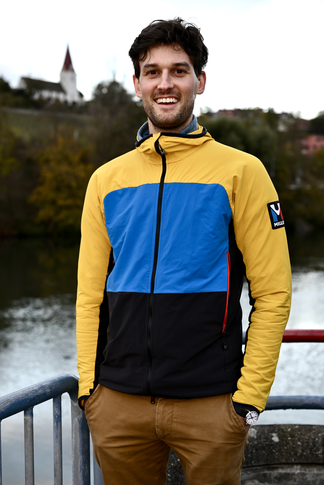
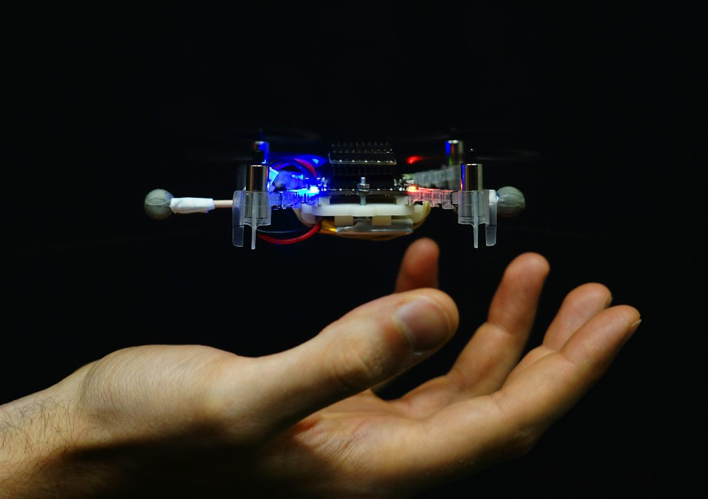

Assistant Professor
Department of Electrical and Computer Engineering
University of Wisconsin-Madison
I am starting a tenure track Assistant Professorship in the Department of Electrical and Computer Engineering at the University of Wisconsin-Madison in February 2023.
I am interested in data-driven control and machine learning with applications in robotics. My goal is to directly use data to make predictions and design reliable control algorithms for complex systems.
In 2015 I received my Bachelor's degree in Mathematics and Mechanical Engineering from Queen's University Canada. I received my Master's degree in Applied Mathematics from Queen's University Canada in 2017 under the supervision of Prof. Bahman Gharesifard and Prof. Abdol-Reza Mansouri. I received my PhD from the Automatic Control Lab at ETH Zürich under the supervision of Prof. Florian Dörfler and Prof. John Lygeros in 2022.
News
- January 2023: Check me out at UW-Madison!
- October 2022: I successfully defended my PhD thesis on Data-enabled Predictive Control!
- September 2022: Invited talk at MTNS (International Symposium on Mathematical Theory of Networks and Systems).
- June 2022: I've been awarded the Best Young Author Journal Paper Award (IEEE Control Systems Society Swiss Chapter) for our paper on Distributionally Robust Chance Constrained Data-enabled Predictive Control.
- May 2022: Top 3 finalist for the KITE teaching award for our course where students learn how to fly a drone autonomously.
- May 2022: I've accepted a position as a tenure track assistant professor at University of Wisconsin-Madison starting in 2023!
- March 2022: Invited seminar at the University of Wisconsin-Madison.
- March 2022: Invited seminar at Kassel University.
- March 2022: Invited seminar at the University of British Columbia.
- February 2022: Invited seminar at Purdue University.
- July 2021: Talk at the SIAM Conference on Control and its Applications.
- October 2020: I will be giving a talk for the "Robust Optimization Webinar".
- September 2020: I will be giving a talk at the virtual workshop "Learning sparse models: theory and applications from system identification to neural networks".
- July 2020: I will be giving a talk on data-driven control at Peking University's control seminar.
- June 2020: Check out our new preprint on Distributionally Robust Chance Constrained Data-enabled Predictive Control.
- July 2019: I am offering a Masters project joint with the Robotics Systems Lab of ETH on Data-enabled Predictive Control of Robotic Systems.
- July 2019: Our papers Regularized and Distributionally Robust Data-Enabled Predictive Control and Data-Enabled Predictive Control for Grid-Connected Power Converters were accepted to CDC 2019.
- June 2019: Our paper Data-Enabled Predictive Control: In the Shallows of the DeePC was the winner of the ECC 2019 Best Student Paper Award.
Talks and Videos
Sparse Learning Workshop 2020: Data-enabled Predictive Control (video)
Sparse Learning Workshop 2020: Data-enabled Predictive Control (slides)

Data-enabled Predictive Control for Quadcopters (video, link to paper)